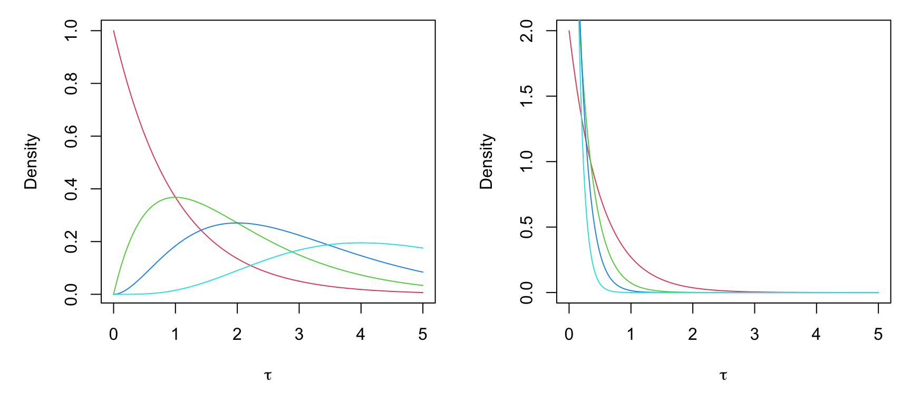

Introduction
บทเรียนนี้จะกล่าวถึงการใช้สถิติแบบเบส์สำหรับการวิเคราะห์เพื่อเปรียบเทียบค่าเฉลี่ยสองกลุ่ม ผู้อ่านจะเห็นว่าการวิเคราะห์แบบเบส์เป็นวิธีการที่ให้สารสนเทศเกี่ยวกับความแตกต่างของค่าเฉลี่ยระหว่างตัวอย่างสองกลุ่มที่มากกว่าการทดสอบ t-test แบบดั้งเดิม
การเปรียบเทียบด้วยวิธีการแบบเบส์ทำให้ผู้วิเคราะห์สามารถประมาณการแจกแจงความน่าจะเป็นภายหลัง ซึ่งเป็นข้อมูลสำคัญสำหรับการคำนวณช่วงความน่าเชื่อถือ (credible intervals) ของพารามิเตอร์ต่าง ๆ ได้แก่ ค่าเฉลี่ย ส่วนเบี่ยงเบนมาตรฐาน รวมทั้งความแตกต่างระหว่างค่าเฉลี่ย ส่วนเบี่ยงเบนมาตรฐาน และขนาดอิทธิพล
ผลการทดสอบเพื่อเปรียบเทียบความแตกต่างของค่าเฉลี่ยสามารถตัดสินใจได้ทั้ง การยอมรับสมมุติฐานหลัก (accept null hypothesis) และยอมรับสมมุติฐานทางเลือก (accept alternative hypothesis) ซึ่งแตกต่างและมีความยืดหยุ่นมากกว่าการทดสอบเพื่อเปรียบเทียบค่าเฉลี่ยแบบดั้งเดิมอย่างมาก
Model 1
อย่างที่ได้สอนในบทเรียนก่อนหน้า โมเดลการวิเคราะห์แบบเบส์มีส่วนประกอบหลักที่ผู้วิเคราะห์จะต้องกำหนดสองส่วน ได้แก่ ส่วนโมเดลค่าสังเกต ที่ใช้สำหรับคำนวณฟังก์ชันภาวะความควรจะเป็น และส่วนการแจกแจงความน่าจะเป็นก่อนหน้า ซึ่งสามารถกำหนดได้อย่างหลากหลาย ขึ้นอยู่กับความเหมาะสมในแต่ละสถานการณ์วิเคราะห์ โมเดล 1 ในหัวข้อนี้แสดงการกำหนดโมเดลแบบดั้งเดิม รายละเอียดมีดังนี้
โมเดลค่าสังเกต
โมเดลค่าสังเกตสามารถกำหนดได้หลายลักษณะ ลักษณะแรกเป็นการกำหนดแบบดั้งเดิม คือกำหนดให้ข้อมูลค่าสังเกต \(y_{ij}\) มีการแจกแจงแบบปกติที่มีค่าเฉลี่ย และส่วนเบี่ยงเบนมาตรฐานเท่ากับ \(\mu_1, \mu_2, \sigma_1\) และ \(\sigma_2\) เมื่อ \(i=1, 2, 3, ..., n_j\) และ \(j=1,2\) ดังนี้ \(y_{i1}\sim N(\mu_1, \sigma_1)\) และ \(y_{i2}\sim N(\mu_2, \sigma_2)\) หรือเขียนรวมในโมเดลเดียวกันได้ดังนี้
\(y_{ij} \sim N(\mu_j,\sigma_j) \implies y_{ij}=\mu_j+\epsilon_{ij}\) เมื่อ \(\epsilon_{ij} \sim N(0,\sigma_j)\)
การแจกแจงความน่าจะเป็นก่อนหน้า
พารามิเตอร์ภายในโมเดลจำแนกเป็นสองประเภท ได้แก่ พารามิเตอร์ค่าเฉลี่ย และพารามิเตอร์ความแปรปรวน (หรือส่วนเบี่ยงเบนมาตรฐาน) การกำหนดการแจกแจงความน่าจะเป็นก่อนหน้าให้กับพารามิเตอร์ดังกล่าวอาจทำได้สองลักษณะ ลักษณะแรกคือการแจกแจงความน่าจะเป็นก่อนหน้าแบบไม่ให้สารสนเทศ (noninformative priors) และลักษณะที่สองคือการแจกแจงความน่าจะเป็นก่อนหน้าแบบมีสารสนเทศ (informative priors) ทั้งนี้เนื่องจากพารามิเตอร์ทั้งสองประเภทมีความหมายและธรรมชาติที่แตกต่างกัน การแจกแจงความน่าจะเป็นก่อนหน้าที่เหมาะสมสำหรับพารามิเตอร์ดังกล่าวจึงมีความแตกต่างกัน ดังนี้
สำหรับพารามิเตอร์ค่าเฉลี่ย กรณีที่ใช้การแจกแจงแบบ noninformative priors สามารถกำหนดได้หลายลักษณะ โดยอาจเลือกใช้การแจกแจงความน่าจะเป็นแบบ uniform บนช่วงปิด \([a,b]\) โดยกำหนดขอบเขตล่างและขอบเขตบนให้มีขนาดใหญ่ เช่น \([-100,100]\) ซึ่งสามารถเขียนคำสั่งใน JAGs ได้เป็น dunif(-100,100) หรืออาจเลือกใช้การแจกแจงแบบปกติที่มีความแปรปรวนขนาดใหญ่ เช่น dnorm(0,0.001) เป็นต้น ในกรณีที่เลือกกำหนด Jeffrey’s prior ให้กับพารามิเตอร์ค่าเฉลี่ย การแจกแจง Jeffrey’s prior จะเทียบเท่ากับการแจกแจงแบบ uniform บนจำนวนจริง (\(Uniform(-\infty ,\infty)\)) รูปด้านล่างแสดงลักษณะการแจกแจงความน่าจะเป็นก่อนหน้าทั้งสอง
par(mfrow=c(1,2))
mu<-seq(-100,100,0.1)
plot(mu, dunif(mu,-100,100), type="l", col="#004D80",
main="Uniform(-100,100) prior",
xlab=expression(mu), ylab="Density")
plot(mu, dnorm(mu, 0, 1000), type="l", col="#004D80",
main="Normal prior",
xlab=expression(mu), ylab="Density")

ส่วนพารามิเตอร์ความแปรปรวนสามารถใช้การแจกแจงแบบ uniform ได้เช่นเดียวกับพารามิเตอร์ค่าเฉลี่ย อย่างไรก็ตามช่วงของการแจกแจงนี้ไม่ควรติดลบทั้งนี้เป็นเพราะความแปรปรวนเป็นพารามิเตอร์ที่มีค่ามากกว่าหรือเท่ากับ 0 เสมอ อีกลักษณะหนึ่งคือใช้การแจกแจงแบบแกมมา (gamma distribution) ซึ่งในกรณีนี้ต้องปรับพารามิเตอร์ความแปรปรวนภายในโมเดลให้อยู่ในรูปของพารามิเตอร์ความเที่ยงตรง (precision parameter: \(\tau\)) ซึ่งมีค่าเท่ากับส่วนกลับของพารามิเตอร์ความแปรปรวนดังนี้ \(\tau = \frac{1}{\sigma^2}\)
การแจกแจงแบบแกมมา มีพารามิเตอร์กำกับการแจกแจง 2 ตัวได้แก่ shape และ rate parameters ซึ่งเขียนแทนด้วยสัญลักษณ์ \(\alpha>0\) และ \(\beta >0\) และมีฟังก์ชันความน่าจะเป็นดังนี้
\(p(\theta)=\frac{\beta^{\alpha}}{\Gamma(\alpha)}\theta^{\alpha-1}exp\{-\beta \theta \}\) โดยที่ \(\theta>0\)
รูปต่อไปนี้แสดงตัวอย่างการแจกแจงความน่าจะเป็นแบบแกมมา เมื่อกำหนดพารามิเตอร์เป็นค่าต่าง ๆ
par(mfrow=c(1,2), mar=c(5,5,1,1))
theta<-seq(0,5,0.01)
plot(theta, dgamma(theta,1,1), type="l", col=2, ylab="Density", xlab=expression(tau))
points(theta, dgamma(theta,2,1), type="l", col=3)
points(theta, dgamma(theta,3,1), type="l", col=4)
points(theta, dgamma(theta,5,1), type="l", col=5)
plot(theta, dgamma(theta,1,2), type="l", col=2, ylab="Density", xlab=expression(tau))
points(theta, dgamma(theta,1,4), type="l", col=3)
points(theta, dgamma(theta,1,6), type="l", col=4)
points(theta, dgamma(theta,1,10), type="l", col=5)

แนวทางการกำหนดค่าพารามิเตอร์ในการแจกแจงความน่าจะเป็นก่อนหน้าของพารามิเตอร์ความเที่ยงตรง (\(\tau\)) การทำได้สองลักษณะ ลักษณะแรกคือ noninformative prior อาจกำหนดให้พารามิเตอร์ \(\alpha\) และ \(\beta\) มีค่าน้อย ๆ เช่น dgamma(0.01,0.01) หรือ dgamma(0.001,0.001) รูปด้านล่างแสดงตัวอย่างของการแจกแจงดังกล่าว

อีกลักษณะหนึ่งคือการกำหนดให้มีสารสนเทศในการแจกแจงความน่าจะเป็นก่อนหน้า โดยอาจมองว่าพารามิเตอร์ \(\alpha\) มีค่าเท่ากับฐานนิยมของ \(\tau\) และ \(\beta\) มีค่าเท่ากับส่วนเบี่ยงเบนมาตรฐานของ \(\tau\)
รูปต่อไปนี้แสดงกรอบแนวคิดของโมเดลการวิเคราะห์ข้างต้น
Example
นักวิจัยต้องการเปรียบเทียบความแตกต่างของผลสัมฤทธิ์ทางการเรียนวิชาคณิตศาสตร์ และทักษะการแก้ปัญหา ระหว่างนักเรียนที่ได้รับการสอนแบบบรรยาย และแบบใช้ปัญหาเป็นฐาน ข้อมูลค่าสังเกตเป็นดังนี้
set.seed(1253)
dat<-data.frame(Ach=c(rnorm(50,50,10),rnorm(50,45,5)),
Solve=c(rt(50,3,0)*5+50,rt(50,3,0)*5+70),
Method=c(rep(1,50),rep(2,50)))
head(dat)
Ach Solve Method
1 65.77855 50.01438 1
2 52.40144 49.48460 1
3 36.68722 43.94092 1
4 60.25187 48.40898 1
5 40.71400 50.11348 1
6 56.94532 56.45850 1tail(dat)
Ach Solve Method
95 48.09186 64.85944 2
96 47.63149 70.82802 2
97 47.14041 68.03648 2
98 45.87590 70.01511 2
99 43.94286 74.52485 2
100 44.35033 84.87383 2โดยที่ Ach และ Solve คือผลสัมฤทธ์และทักษะการแก้ปัญหาตามลำดับ ส่วน TMethod = 1 คือกลุ่มนักเรียนที่ได้รับการสอนแบบบรรยาย และ TMethod = 2 คือกลุ่มนักเรียนที่ได้รับการสอนแบบใช้ปัญหาเป็นฐาน
model syntax
จากปัญหาข้างต้นสามารถเขียน model syntax ได้ดังนี้
"model{
#likelihood function
for(i in 1:n)
{
y1[i]~dnorm(mu[1],tau[1])
y2[i]~dnorm(mu[2],tau[2])
}
for (i in 1:2)
{
#prior distribution
mu[i]~dnorm(0,0.01)
tau[i]~dgamma(0.01,0.01)
#deterministic nodes
sigma[i]<-sqrt(1/tau[i])
}
#means difference
diff<-abs(mu[2]-mu[1])
#effect size
d<-abs(mu[2]-mu[1])/(sigma[2]) #Glass's effect size
}"
ประมวลผล
เมื่อกำหนดโมเดลในข้างต้นแล้ว สามารถดำเนินการประมวลผลได้ดังนี้
library(runjags)
library(coda)
dataList<-list(y1=dat[1:50,1],y2=dat[51:100,1], n=50)
fit<-run.jags(method="parallel",
model=twosamples,
monitor=c("mu","sigma","diff","d"),
data=dataList,
n.chains=3,
sample = 10000,
thin=3,
summarise=TRUE,
plots=FALSE,
keep.jags.files = FALSE)
Calling 3 simulations using the parallel method...
Following the progress of chain 1 (the program will wait for
all chains to finish before continuing):
Welcome to JAGS 4.3.0 on Mon Feb 21 22:51:15 2022
JAGS is free software and comes with ABSOLUTELY NO WARRANTY
Loading module: basemod: ok
Loading module: bugs: ok
. . Reading data file data.txt
. Compiling model graph
Resolving undeclared variables
Allocating nodes
Graph information:
Observed stochastic nodes: 100
Unobserved stochastic nodes: 4
Total graph size: 115
. Reading parameter file inits1.txt
. Initializing model
. Adaptation skipped: model is not in adaptive mode.
. Updating 4000
-------------------------------------------------| 4000
************************************************** 100%
. . . . . Updating 30000
-------------------------------------------------| 30000
************************************************** 100%
. . . . Updating 0
. Deleting model
.
All chains have finished
Note: the model did not require adaptation
Simulation complete. Reading coda files...
Coda files loaded successfully
Calculating summary statistics...
Calculating the Gelman-Rubin statistic for 6 variables....
Finished running the simulationการวิเคราะห์ผลลัพธ์ที่ได้จาก MCMC
อย่างที่ได้กล่าวไว้ในบทเรียนก่อนหน้า การวิเคราะห์ผลลัพธ์ที่ได้จากอัลกอริทึม MCMC อาจจำแนกเป็นสองส่วน ส่วนแรกคือการวิเคราะห์เพื่อตรวจสอบความเหมาะสมของตัวอย่างลูกโซ่มาร์คอฟที่จำลองขึ้น และส่วนที่สองคือการวิเคราะห์เพื่อหาข้อสรุปของคำถามวิจัยที่กำหนด
การตรวจสอบการลู่เข้าของตัวอย่างลูกโซ่มาร์คอฟที่จำลองขึ้น
ผลการวิเคราะห์ต่อไปนี้ใช้ตรวจสอบการลู่เข้าของตัวอย่างลูกโซ่มาร์คอฟที่จำลองขึ้นจากอัลกอริทึม MCMC
library(MCMCvis)
library(scales)
sample<-as.mcmc.list(fit)
MCMCsummary(sample)
mean sd 2.5% 50% 97.5% Rhat n.eff
mu[1] 50.561028 1.6382233 47.277995 50.590500 53.716832 1 30000
mu[2] 44.545669 0.6303724 43.288297 44.546200 45.783703 1 31573
sigma[1] 11.636257 1.2155292 9.548669 11.537100 14.260510 1 30613
sigma[2] 4.418063 0.4556415 3.627226 4.380465 5.417022 1 29995
diff 6.016517 1.7515582 2.475083 6.030635 9.401061 1 30000
d 1.375031 0.4217797 0.559478 1.368555 2.217382 1 30000MCMCtrace(sample,pdf=F)


autocorr.plot(sample)


Posterior Predictive Check
อีกการตรวจสอบหนึ่งที่สามารถใช้เพื่อตรวจสอบความสอดคล้องของโมเดลการวิเคราะห์กับข้อมูลเชิงประจักษ์คือการตรวจสอบด้วยค่าทำนายภายหลัง (posterior predictive check) โดยการแจกแจงภายหลังของค่าทำนาย (posterior predictive distribution) มีนิยามดังนี้
\(p(\hat{y}|y)=\int p(\hat{y}|\theta)p(\theta|y)d\theta\)
เมื่อ \(\hat{y}\) คือค่าทำนาย (predicted value) ของโมเดลการวิเคราะห์ และ \(p(\theta|y)\) คือการแจกแจงความน่าจะเป็นภายหลังของพารามิเตอร์ \(\theta\) ผู้วิเคราะห์สามารถใช้การแจกแจงความน่าจะเป็นภายหลังของค่าทำนายเพื่อตรวจสอบความสอดคล้องเชิงประจักษ์ (goodness of fit) ของโมเดลการวิเคราะห์
ตัวอย่างด้านล่างแสดงการตรวจสอบด้วยค่าทำนายภายหลัง
#posterior predictive check
temp<-data.frame(as.matrix(sample))
posterior.pred1<-rnorm(length(temp$mu.1.),temp$mu.1., temp$sigma.1.)
posterior.pred2<-rnorm(length(temp$mu.2.),temp$mu.2., temp$sigma.2.)
par(mfrow=c(1,2))
plot(density(dat$Ach[1:50]), type="h", col=alpha("skyblue",0.5), main="Group1")
points(density(posterior.pred1),type="l")
legend(5,0.03, legend=c("observed","predictive"), pch=16,col=c("skyblue", "black"), bty="n", cex=0.6)
plot(density(dat$Ach[51:100]), type="h", col=alpha("skyblue",0.5), main="Group2")
points(density(posterior.pred2),type="l")
legend(50,0.08, legend=c("observed","predictive"), pch=16,col=c("skyblue", "black"), bty="n", cex=0.6)

การอนุมานเชิงสถิติ
การอนุมานเชิงสถิติเกี่ยวกับความแตกต่างของค่าเฉลี่ยผลสัมฤทธิ์ระหว่างกลุ่มนักเรียนที่ได้รับการสอนแบบบรรยายกับใช้ปัญหาเป็นฐาน สามารถทำได้โดยการวิเคราะห์การแจกแจงความน่าจะเป็นภายหลังของความแตกต่างระหว่างค่าเฉลี่ย ส่วนเบี่ยงเบนมาตรฐาน รวมทั้งขนาดอิทธิพล ผลการวิเคราะห์ด้านล่างแสดงการแจกแจง posterior ของพารามิเตอร์ทั้งสาม ผู้อ่านจะเห็นว่าสารสนเทศที่ได้จากการวิเคราะห์ด้วยสถิติแบบเบส์มีมากและหลากหลายกว่าการวิเคราะห์แบบดั้งเดิม
ผลการวิเคราะห์ด้านล่างแสดงการแจกแจงความน่าจะเป็นภายหลังของค่าเฉลี่ยและส่วนเบี่ยงเบนมาตรฐานจำแนกตามกลุ่มนักเรียนที่ได้รับการจัดการเรียนการสอนแต่ละแบบ
ผลการวิเคราะห์ด้านล่างแสดงการแจกแจงความน่าจะเป็นภายหลังของความแตกต่างของค่าเฉลี่ยผลสัมฤทธิ์ระหว่างกลุ่มที่ได้รับการสอนแบบบรรยายกับใช้ปัญหาเป็นฐาน ซึ่งพบว่า ความแตกต่างของค่าเฉลี่ยดังกล่าวมีค่าประมาณ -2.289 คะแนน และมีค่าช่วงความน่าเชื่อถือสูงสุดคือช่วง \([-19.06, 11.44]\)

mean sd 2.5% 50% 97.5% Rhat n.eff
diff 6.016517 1.751558 2.475083 6.030635 9.401061 1 30000ทั้งนี้ผู้วิเคราะห์จะต้องนิยามปริมาณดังกล่าวเอาไว้ในส่วนคำสั่งระบุโมเดลถึงจะเรียกการแจกแจงความน่าจะเป็นภายหลังขึ้นมาวิเคราะห์ได้
ในตัวอย่างข้างต้นได้ทำการนิยามทั้ง node ของความแตกต่างระหว่างค่าเฉลี่ยรวมทั้งขนาดอิทธิพลเอาไว้
ผลการวิเคราะห์ข้างต้นสามารถประมาณค่าเฉลี่ยผลสัมฤทธิ์ทางการเรียนในแต่ละกลุ่ม โดยพบว่า นักเรียนกลุ่มที่ได้รับการจัดการเรียนการสอนแบบบรรยายมีค่าเฉลี่ยผลสัมฤทธิ์ทางการเรียนสูงกว่ากลุ่มที่ได้รับการจัดการสอนแบบใช้ปัญหาเป็นฐานเล็กน้อย ทั้งนี้เมื่อพิจ่ารณา posterior distribution ของขนาดอิทธิพล \(d\) พบว่าช่วงความน่าเชื่อถือ 95% ของขนาดอิทธิพลดังกล่าวมีค่าต่ำกว่า 2 ซึ่งหมายความว่าความแตกต่างของค่าเฉลี่ยผลสัมฤทธิ์ระหว่างตัวอย่างทั้งสองกลุ่มมีขนาดที่ต่ำมาก ด้วยความน่าเชื่อถือที่มากกว่า 95%
Iterations = 5001:34998
Thinning interval = 3
Number of chains = 3
Sample size per chain = 10000
1. Empirical mean and standard deviation for each variable,
plus standard error of the mean:
Mean SD Naive SE Time-series SE
mu[1] 50.561 1.6382 0.009458 0.009458
mu[2] 44.546 0.6304 0.003639 0.003548
sigma[1] 11.636 1.2155 0.007018 0.006950
sigma[2] 4.418 0.4556 0.002631 0.002631
diff 6.017 1.7516 0.010113 0.010113
d 1.375 0.4218 0.002435 0.002435
2. Quantiles for each variable:
2.5% 25% 50% 75% 97.5%
mu[1] 47.2780 49.497 50.591 51.661 53.717
mu[2] 43.2883 44.129 44.546 44.966 45.784
sigma[1] 9.5487 10.778 11.537 12.392 14.261
sigma[2] 3.6272 4.097 4.380 4.698 5.417
diff 2.4751 4.861 6.031 7.196 9.401
d 0.5595 1.094 1.369 1.652 2.217d<-data.frame(as.matrix(sample))
d<-d$d
table(d<0.2)%>%prop.table
FALSE TRUE
0.997633333 0.002366667
FALSE TRUE
0.0185 0.9815 MCMCsummary(sample, HPD=TRUE, pg0=TRUE)
mean sd 95%_HPDL 95%_HPDU Rhat n.eff p>0
mu[1] 50.561028 1.6382233 47.402400 53.81020 1 30000 1
mu[2] 44.545669 0.6303724 43.297200 45.78850 1 31573 1
sigma[1] 11.636257 1.2155292 9.430200 14.09780 1 30613 1
sigma[2] 4.418063 0.4556415 3.583160 5.34564 1 29995 1
diff 6.016517 1.7515582 2.592650 9.50118 1 30000 1
d 1.375031 0.4217797 0.552929 2.20892 1 30000 1
Model 2
อีกโมเดลหนึ่งที่สามารถกำหนดได้คือกำหนดโมเดลค่าสังเกตด้วยการแจกแจงความน่าจะเป็นแบบที (t distribution) ทั้งนี้การแจกแจงความน่าจะเป็นแบบทีดังกล่าวเป็นอีก version หนึ่งเรียกว่า Generalized student’s t distribution ซึ่งมีพารามิเตอร์กำกับการแจกแจง 3 ตัวได้แก่ ค่าเฉลี่ย ส่วนเบี่ยงเบนมาตรฐาน และองศาความเป็นอิสระ (\(\nu>0\)) และมีฟังก์ชันความน่าจะเป็นดังนี้
\(p(y|\mu, \sigma, \nu)=\frac{\Gamma(\frac{\nu+1}{2})}{\Gamma(\frac{\nu}{2})\sqrt{\pi\nu}\sigma}(1+\frac{1}{\nu}(\frac{y-\mu}{\sigma})^2)^{-\frac{\nu+1}{2}}\)
การเลิือกใช้การแจกแจงแบบทีเป็นโมเดลค่าสังเกตมีข้อดีกว่าการแจกแจงแบบปกติคือ การแจกแจงแบบทีเป็นการแจกแจงที่มีส่วนปลาย (หาง) ของการแจกแจงที่หนากว่าการแจกแจงแบบปกติ ซึ่งทำให้โมเดลของค่าสังเกตมีความแกร่งต่อการเกิดค่าผิดปกติ (outlier) มากกว่าโมเดลที่ใช้การแจกแจงแบบปกติ ความหนา ณ ส่วนปลายของการแจกแจงแบบทีสามารถกำหนดผ่านค่าพารามิเตอร์องศาความเป็นอิสระ (\(\nu\)) โดยถ้า \(\nu\) ยิ่งมีค่าน้อย การแจกแจงทีจะยิ่งมีส่วนปลายที่หนาขึ้น ในทางกลับกันหาก \(\nu\) มีค่ามาก การแจกแจงทีดังกล่าวจะลู่เข้าหาการแจกแจงแบบปกติ กล่าวได้ว่าโมเดลนี้เป็นกรณีทั่วไปของ model 1 ที่ได้กล่าวไว้ก่อนหน้านี้นั่นเอง
ในทำนองเดียวกันการกำหนดการแจกแจงความน่าจะเป็นก่อนหน้าให้กับพารามิเตอร์องศาความเป็นอิสระสามารถเลือกใช้การแจกแจงแกมมาเหมือนกับพารามิเตอร์ส่วนเบี่ยงเบนมาตรฐาน โดยอาจมองว่า \(\alpha_{\nu}\) มีค่าเท่ากับค่าเฉลี่ยขององศาความเป็นอิสระ และ \(\beta_{\nu}\) มีค่าเท่ากับส่วนเบี่ยงเบนมาตรฐานขององศาความเป็นอิสระ
Example

Distill is a publication format for scientific and technical writing, native to the web.
Learn more about using Distill at https://rstudio.github.io/distill.